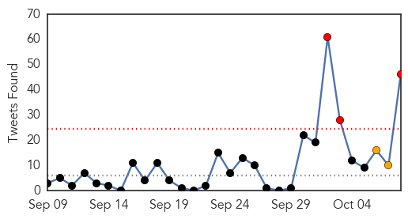
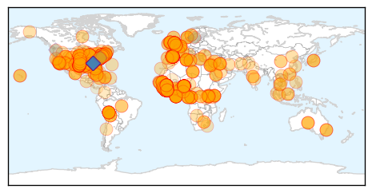
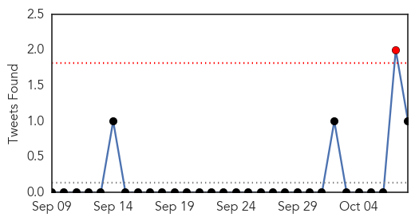

Ebola
30-Day Web Trend
6 alerts, 0 warnings
30-Day Twitter Trend
2 alerts, 2 warnings

Article Locations
Article Confidences
Top Articles:
- 1.000
- Sex in a time of Ebola
- 1.000
- Others Fear The Worst
- 1.000
- Why nation’s top docs say Ebola won’t spread in U.S.
- 1.000
- Ebola: Should Americans be worried? No. And yes.
- 1.000
- Worst Ebola outbreak on record tests global response - World
- 1.000
- Ebola outbreak a 'real humanitarian crisis'
- 1.000
- CHRONOLOGY-Worst Ebola outbreak on record tests global response
- 1.000
- Ebola scare at Advocate highlights protocols
- 1.000
- Dallas Ebola Patient on Ventilator, Getting Dialysis
- 1.000
- Ebola virus arrives in Dallas, patient dies [updated]
- 1.000
- Ebola Patient Dies In Texas - Story
- 1.000
- Five Things You Should Know About Ebola
- 1.000
- Ebola Now A Risk To The UK Expected To Hit Within Weeks
- 1.000
- Should you be worried in Connecticut? No. And yes.
- 1.000
- US, Canada increase Ebola screenings as toll nears 3,900
- 1.000
- Odds were stacked against Dallas Ebola patient
- 1.000
- A quick look at Ebola developments
- 1.000
- JRMC responds to potential Ebola threat
- 1.000
- Ebola virus: What is it and how does it spread?
- 1.000
- Ebola outbreak: Survivors told to 'use condoms' to prevent virus spreading
- 1.000
- Ebola virus: Sierra Leone boy's UK school placement cancelled over 'misguided hysteria' by parents over the disease
- 1.000
- Ebola virus outbreak: UK hospitals on standby as David Cameron holds a Cobra meeting
- 1.000
- Ebola virus outbreak: Norwegian patient to get the 'last available dose of ZMapp in the world'
- 1.000
- Ebola outbreak: Britain sending 750 soldiers and medics to Western Africa
- 1.000
- Facts About the Deadly Virus
- 1.000
- Odds were stacked against Dallas Ebola patient
- 1.000
- Worst Ebola outbreak on record tests global response
- 1.000
- Outside of this suit, no one is safe around Ebola
- 1.000
- Reuters Health News Summary
- 1.000
- Ebola survivors in West Africa warned to wear condoms to avoid spreading disease
- 1.000
- DeKalb County officials urge Ebola education
- 1.000
- Feds unveil Ebola screening steps; Texas patient dies
- 1.000
- Ebola: Northern Ireland is preparing for outbreak should killer virus spread, say officials
- 1.000
- New concern worldwide as nurse in Spain gets Ebola
- 1.000
- First Ebola Patient Diagnosed In U.S. Dies In Dallas Hospital
- 1.000
- Texas Ebola patient’s remains will be cremated
- 1.000
- Some experts worry Ebola virus may spread more easily than thought
- 1.000
- Emergency Team at Work on Ebola Front Lines as Fight Expands - Liberia
- 1.000
- Stepped-Up Airport Screening Reflects Increasing Urgency in U.S. Ebola Response
- 1.000
- Dallas Ebola patient Thomas Eric Duncan dies; U.S. airports to begin screening for the virus
- 1.000
- Factbox - Worst Ebola outbreak on record tests global response
- 1.000
- Ebola Cases Prompts Airport Screenings
- 1.000
- Ebola LATEST: Dallas deputy hospitalized with possible Ebola symptoms
- 1.000
- Outbreak updates: Dallas Deputy hospitalized with possible Ebola symptoms
- 1.000
- CDC, White House Fighting Fears with Information
- 1.000
- Health officials allay Ebola fears
- 1.000
- UN urges Russia to broaden cooperation in fighting Ebola
- 1.000
- The Daily Orange – The Independent Student Newspaper of Syracuse, New York
- 1.000
- Local health officials prep for possibility of Ebola spread, urge residents to remain calm
- 1.000
- Area health officials educating citizens on the Ebola virus
Showing top 50 articles...
Top Tweets:
- 0.996
- There are different strains of Ebola. The outbreak in West Africa is the Ebola Zaire strain, not Ebola Reston strain.
- 0.975
- .@mikierulf No, Ebola & Marburg are 2 different viruses. There is no link between the Ebola epidemic and the Marburg case. CDCchat
- 0.965
- .@ChiefPressler Ebola is not spread w/ a flu virus, but can show similar symptoms so may appear alike in earlier stages. CDCChat
- 0.964
- - The outbreak in West Africa is the Ebola Zaire strain.
- 0.959
- We together can stop the Ebola virus & should always keep in mind that the enemy is a virus, not people, countries, communities CDCChat
- 0.959
- .@BeanTownBeauti Ebola is not spread through casual contact, and you have to be sick with Ebola to be contagious. cdcchat
- 0.953
- Find out key facts about the Ebola virus & outbreak in's infographic with http://t.co/Ma2Uw2MboP
- 0.938
- MSF says if it had 1700 fully staffed ebola beds it might dent the spread of the epidemic. It has 549.
- 0.931
- This Visualizing Health Policy provides a snapshot of the 2014 Ebola outbreak in West Africa http://t.co/MMbuN0f0pG
- 0.931
- RT: UN says an international staff on medical team in Liberia UNMIL mission tested positive for Ebola. voaalert
- 0.929
- Hi! This is Sue Partridge, Ebola subject matter expert currently working on the Ebola outbreak at CDC in Atlanta. CDCchat
- 0.929
- .@Lemon1970Liz There have no reports of pets becoming sick with Ebola or playing a role in transmission of Ebola to humans. CDCchat
- 0.919
- Update: MSF says if it had 1700 fully staffed ebola beds it might dent the spread of the epidemic. It has (updated figure) 657.
- 0.909
- RT WHO Ebola SitRep, October 8: 8,033 cases, 3,879 deaths http://t.co/w2suw8Lg7b
- 0.907
- .@CTCanines There have been no reports of pets becoming sick with Ebola or of playing a role in transmission of Ebola to humans. CDCchat
- 0.871
- The ongoing Ebola outbreak has claimed far too many lives. CDCchat
- 0.858
- .@sept151965 A standard Ebola test can be run on transfused blood prior to transfusion to diagnose Ebola status. CDCChat
- 0.840
- .@sm1guru Ebola is transmitted through direct contact with body fluids (i.e. droplets) of a person who is sick with Ebola. cdcchat
- 0.836
- - Researchers believe that Ebola virus disease is animal-borne and that bats are the most likely reservoir. CDCchat
- 0.824
- RT: Coming up on at 6: Hear from local CDC worker who just returned from Africa after helping with Ebola outbreak h…
- 0.822
- In public health, many impt actions don’t make headlines— if we stop Ebola outbreak in rural areas & prevent Uganda Marburg case CDCChat
- 0.803
- .@Casillic Ebola patient recovery unpredictable & can be supported by medical intervention (infection control/administered IVs). CDCChat
- 0.798
- .@xoxoLaurmani We know how to stop Ebola w/public health: find disease, isolate/care for patients, trace contacts, stop exposure cdcchat
- 0.778
- Risk of Ebola to Europe can only be eliminated by stopping the outbreak in West Africa http://t.co/QwOSuoQh59
- 0.773
- RT: None of contacts of Dallas Ebola patient showing symptoms or fever. Will continue to monitor.
- 0.773
- RT: None of contacts of Dallas Ebola patient showing symptoms or fever. Will continue to monitor.
- 0.770
- .@inforocks Ebola healthcare workers wear protective gear to protect themselves from bodily fluids not because Ebola is airborne. cdcchat
- 0.758
- Health workers need 7 sets protective clothing PER DAY for every ebola patient - UN. Needs now, prot. clothing alone, 3095 MT tonnes/month.
- 0.754
- .@IONBADEGGS There is no evidence that mosquitos or other insects can transmit Ebola virus. http://t.co/UOMbii8pas cdcchat
- 0.754
- There is no evidence that mosquitos or other insects can transmit Ebola virus. http://t.co/YD1em1xv2X
- 0.735
- Welcome to today’s CDCchat on Ebola. Thanks for joining us! We know you have many questions about Ebola & the 1st confirmed US case.
- 0.735
- Public health officials are investigating the Dallas Ebola case, trying to determine the source of exposure. CDCchat
- 0.726
- Ebola killing more people than those with virus. Read on for more http://t.co/3k2NNetvh3
- 0.719
- RT: The best way to protect Americans from Ebola is to stop the outbreak in West Africa. http://t.co/NW1D0ugFIB CDCchat
- 0.710
- Though unlikely, if person w/Ebola sneezes on someone & saliva/mucus contacts person’s eyes, nose, mouth, disease may be spread. CDCchat
- 0.707
- .@DrJCerero - Ebola is detected in blood only after onset of symptoms, usually fever. CDCchat
- 0.699
- Texas Ebola patient Eric Duncan has died. http://t.co/T5zBNoFuKU
- 0.682
- .@KaiiitlynB Ebola has been found in sweat. It's very low risk and not commonly thought as a body fluid that would transmit Ebola. CDCchat
- 0.680
- .@couldabeenagm Currently there has been no report of dog to human transmission or showing symptoms of Ebola CDCChat
- 0.678
- .@Ryan_2ka Ebola is killed with hospital-grade disinfectants (such as household bleach). CDCchat
- 0.675
- Fight against Ebola in W. Africa is going to be long, hard fight. The enemy is a virus, but working together, we can contain it.
- 0.647
- Our experts are here to answer your questions on the response to Ebola in the 1st US confirmed case & the epidemic in W. Africa. CDCchat
- 0.644
- RT: All of's Ebola news–on vaccines, drugs, tests, cases, and more–is free: http://t.co/GGMUbgx4qv (I edi…
- 0.644
- Entry screening is a layered approach that, when used w/ other public health measures, can strengthen our efforts to battle Ebola.
- 0.635
- .@dawnbandit1 W/out Ebola symptoms is not contagious. If symptoms start on airplane risk low unless contact made w/bodily fluids. CDCChat
- 0.631
- RT: I asked about Ebola going airborne: Virus "has great deal of genetic stability." More than other viruses. …
- 0.631
- BREAKING: Dallas Ebola patient dies. We must TackleEbola to help end the outbreak. You can join in the fight, go to http://t.co/QqZQmP09Ix
- 0.624
- RT: Fight against Ebola in W. Africa is going to be long, hard fight. The enemy is a virus, but working together, we can con…
- 0.620
- .@PerlaCabrera_ We know how to stop Ebola from spreading: find disease, isolate patients, trace/monitor contacts & stop exposure. cdcchat
- 0.599
- .@J_weezz If person w/Ebola sneezes & saliva/mucus contacts person’s eyes/nose/mouth, disease may be spread http://t.co/2pbt7c1wZB CDCChat
Showing top 50 tweets...
Swine Flu
30-Day Web Trend
1 alerts, 0 warnings

30-Day Twitter Trend
0 alerts, 0 warnings

Article Locations
Article Confidences

Top Articles:
Top Tweets:
- 0.978
- We do not shut our borders to countries affected by Ebola; didn’t w/ SARS or pandemic H1N1 flu.